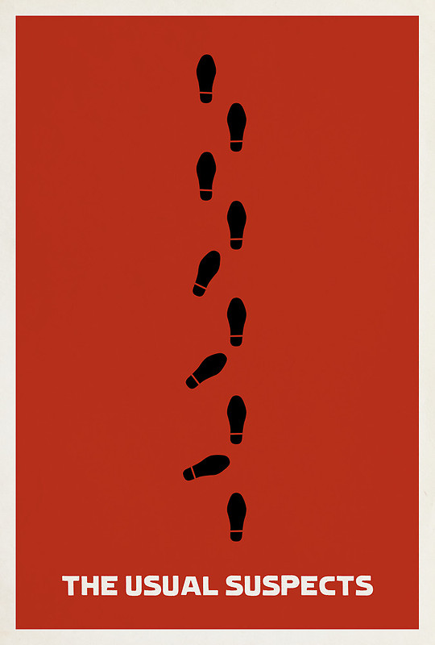
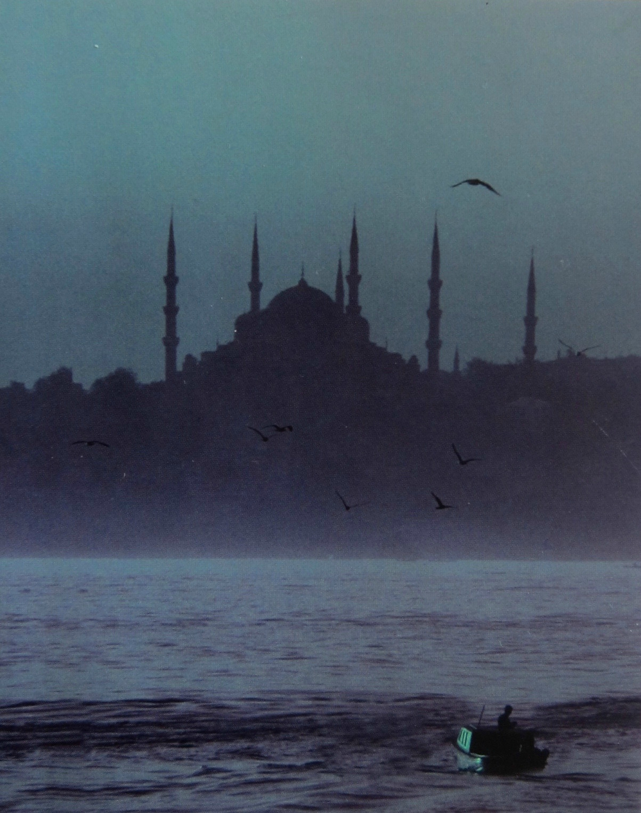
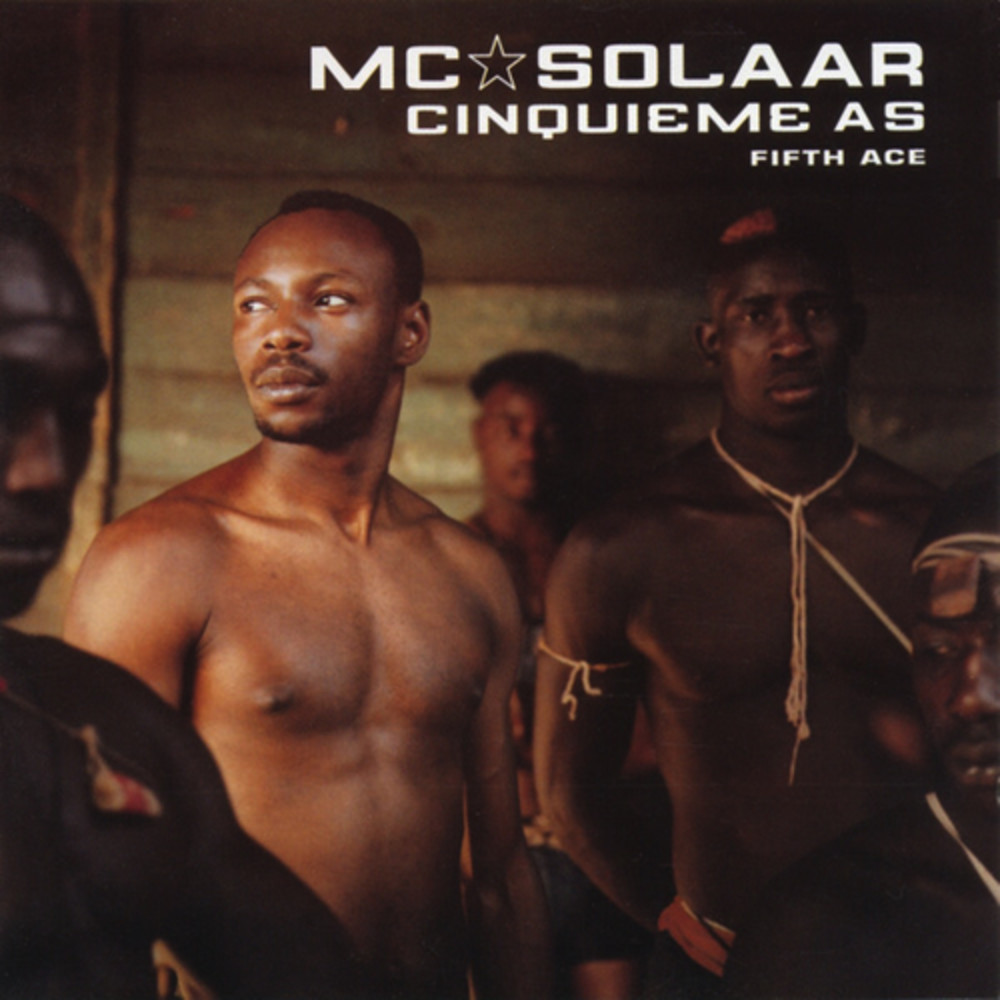

Après pas mal d'études, de finance et d'innov, je suis actuellement dans un Wagon dont j'ignore la destination : 100% good style !.
See for yourself|  |
1995 - The Usual SuspectsUsual Suspects est un film germano-américain réalisé par Bryan Singer et sorti en 1995. Utilisant une technique de narration non linéaire, le film suit l'interrogatoire mené par l'agent Kujan d'un petit malfaiteur infirme nommé Verbal Kint. |
|  |
2010 - Parle leur de batailles de rois et d'éléphantsCe roman imagine le voyage que Michel-Ange aurait pu effectuer en mai 1506 à Constantinople à la demande du sultan Bajazet qui l'invita à délaisser les travaux du tombeau du pape Jules II pour réaliser un projet de pont sur la Corne d'or, bras de mer qui sépare l'Istanbul antique du quartier de Pera, sur le Bosphore. |
|  |
2001 - Cinquième AsCinquième As est un album de MC Solaar sorti en 2001, c'est son cinquième album, il sera certifié disque de platine à deux reprises. MC Solaar dans cet album adopte le style qui ne le quittera plus, rapper sur des airs autres que le hip hop. |